BD Drivers App
Streamlining field operations: From paper-based chaos to a unified, real-time coordination experience.
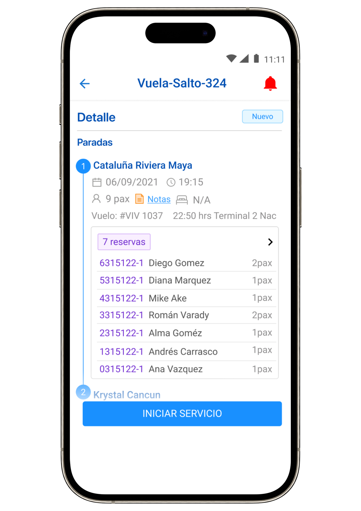
Overview
Service updates that once took up to 24 hours were reduced to minutes by redesigning how drivers, logistics, and operations coordinated in the field.
A leading travel service provider in Latin America relied on fragmented tools and paper-based processes that made real-time updates slow and unreliable. I led the redesign of the driver experience to align the product with real workflows, reduce operational friction, and improve traveler trust.
Project Objectives
- Eliminate manual coordination calls
- Increase digital adoption by 40%
- Optimize field safety and security
- Reduce operational reporting delay
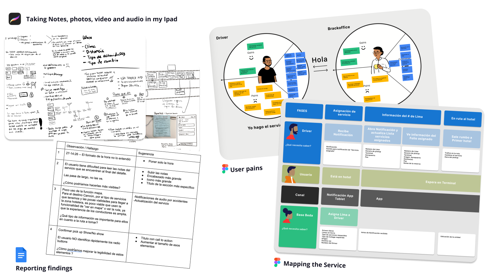
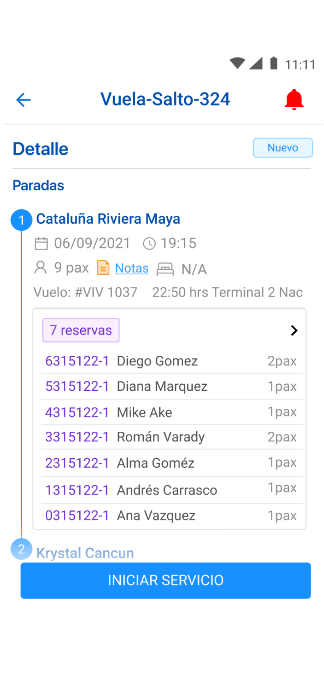
Logistic Breakdown
Drivers operated in a high-stress environment where every second mattered. The existing app's failure to adapt to field reality forced coordination into unsafe, manual workarounds.
Operational Friction
- Lagged Communication: 24-hour delays in service reporting due to paper-based logs.
- Safety Risks: Drivers using multiple messaging apps while operating vehicles.
- Workflow Mismatch: Original design didn't account for the "gloved hand" or "bright sun" field constraints.
- Data Silos: Logistics had no visibility into real-time driver locations or status.
Field Reality
"Updating the service later feels safer than using the app while driving. The buttons are too small."
"I spend 60% of my day on the phone just to confirm information the system should already have."
Field-Driven Design Process
Field Research
Shadowing drivers in Cancun and Playa del Carmen to observe real coordination in motion.
Research Insights
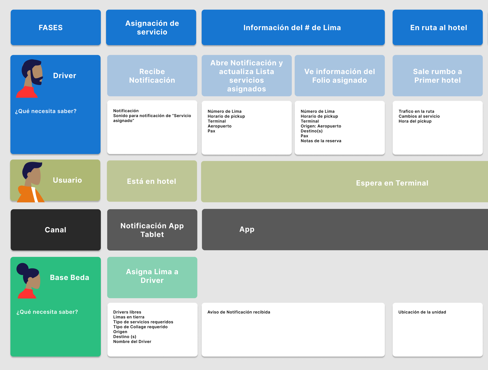
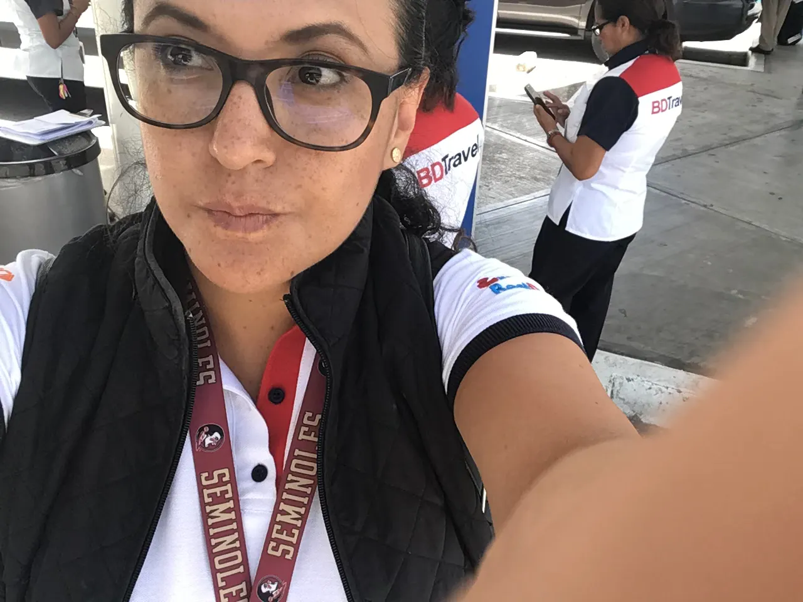
Reframing
Identifying that "Real-Time" wasn't about speed, but about data accuracy and trust.
Reframing
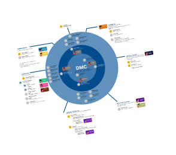
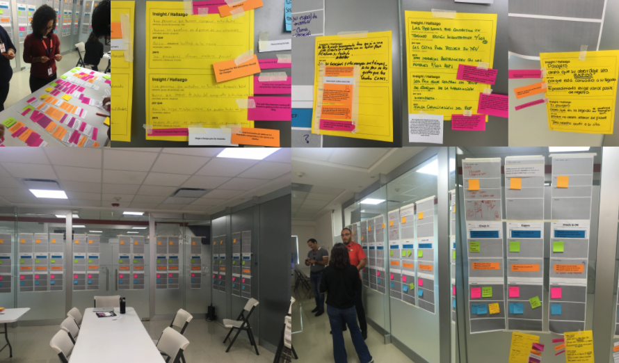
Co-creation
Designing on the fly with drivers to ensure the UI worked for one-handed operation.
Prototyping
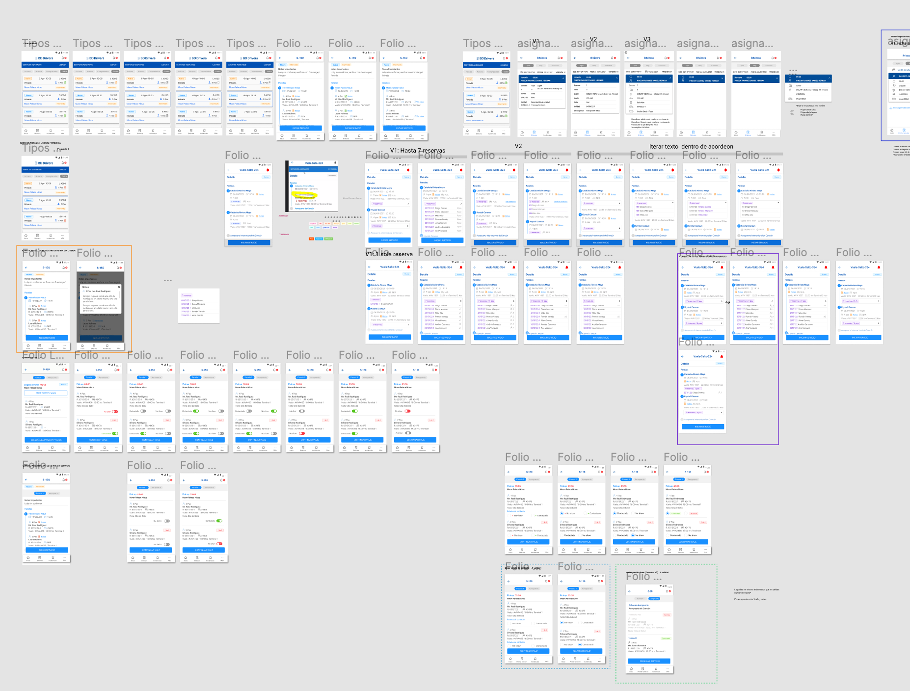
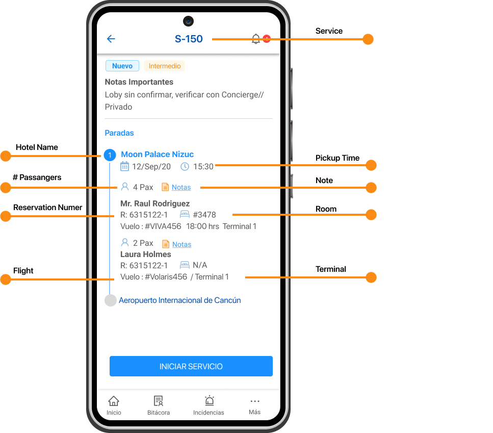
Validation
Field-testing the beta with 10 units to measure reporting speed vs manual logs.
Validation
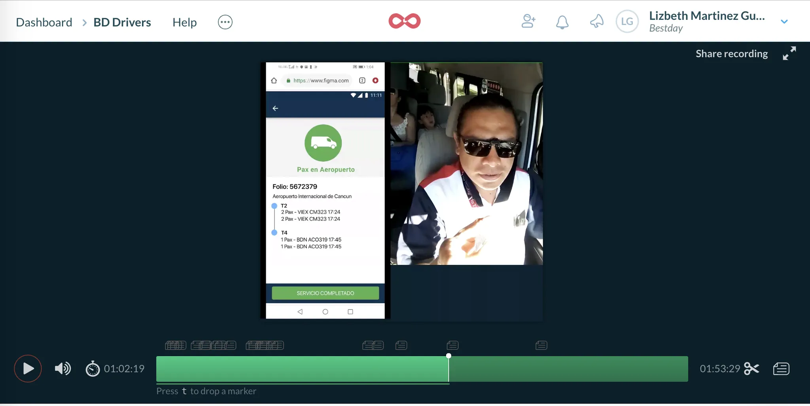
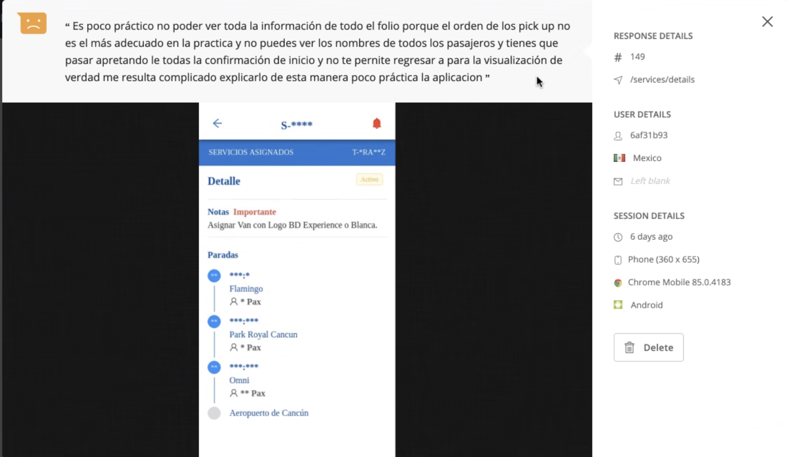
The Solution: A Frictionless Operations Hub
Replacing paper forms and chaos with an intelligent, workflow-aware web application.
Cross-Platform PWA
Eliminated the need for specialized hardware by deploying a responsive Progressive Web App that runs on any smartphone.
One-Tap Workflows
UI components designed for high-glare environments and one-handed operation, reducing distraction while on the road.
Real-Time Sync
Instant data synchronization between the vehicle and the logistics center, providing 100% visibility of the operation.
Safety-First Inputs
Replaced manual typing with smart selectors and automated status triggers to keep drivers' eyes on the road.


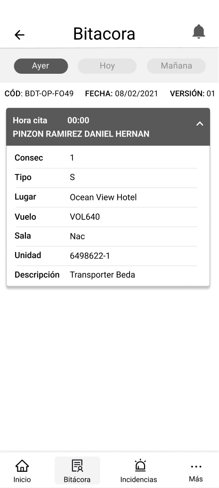

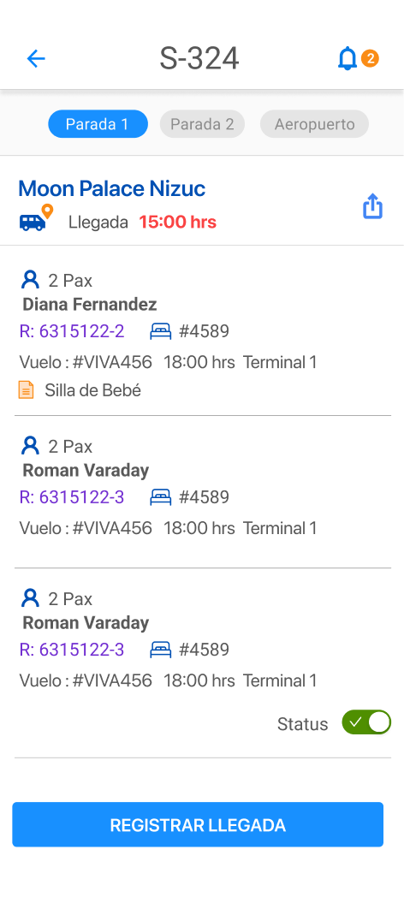
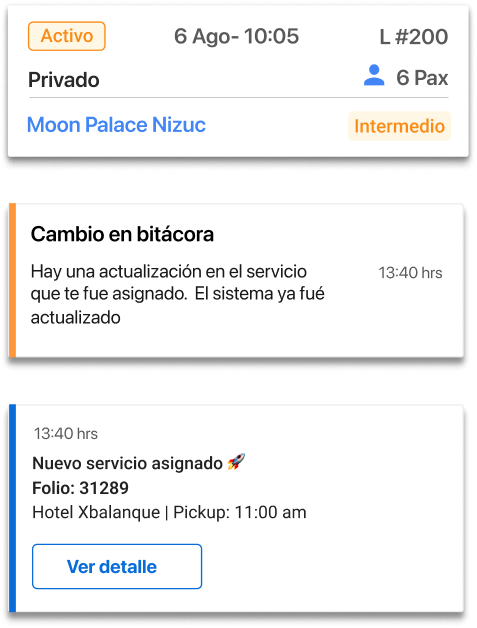
Operational Impact
The redesigned experience transformed a fragile, call-driven process into a faster, safer, and more reliable operation.
40%
Adoption
Increase in monthly active users
85%
Retention
Users completing onboarding
4.8/5
Satisfaction
Average store rating
65%
Time Reduction
Less time to complete transactions
Key Learnings
Letting the Field Guide Our Decisions
Grounding decisions in field evidence aligned stakeholders and clarified priorities
Visualizing the Journey to a Paperless Operation
Service blueprints helped the organization envision a realistic path to going paperless
UX Beyond Design: Driving Change
UX acted as both design and evangelism across operations and engineering
Human Stories Over Assumptions
Sharing recordings and real stories built trust with non-design partners